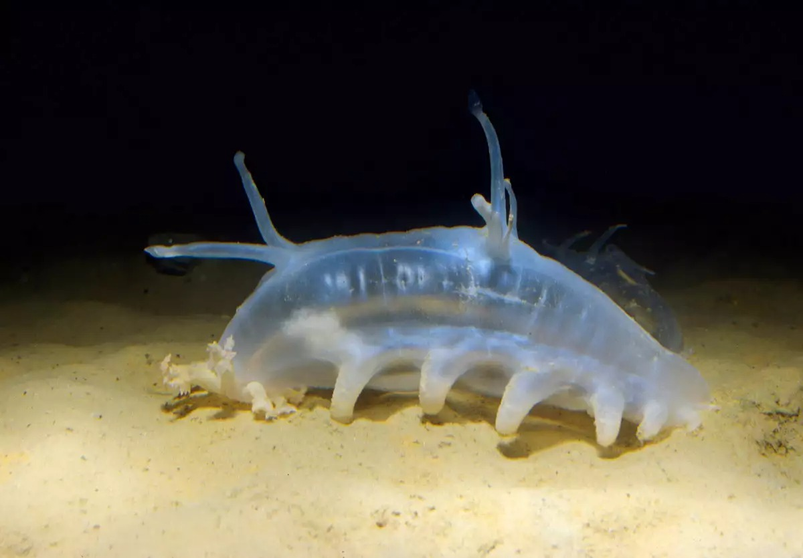
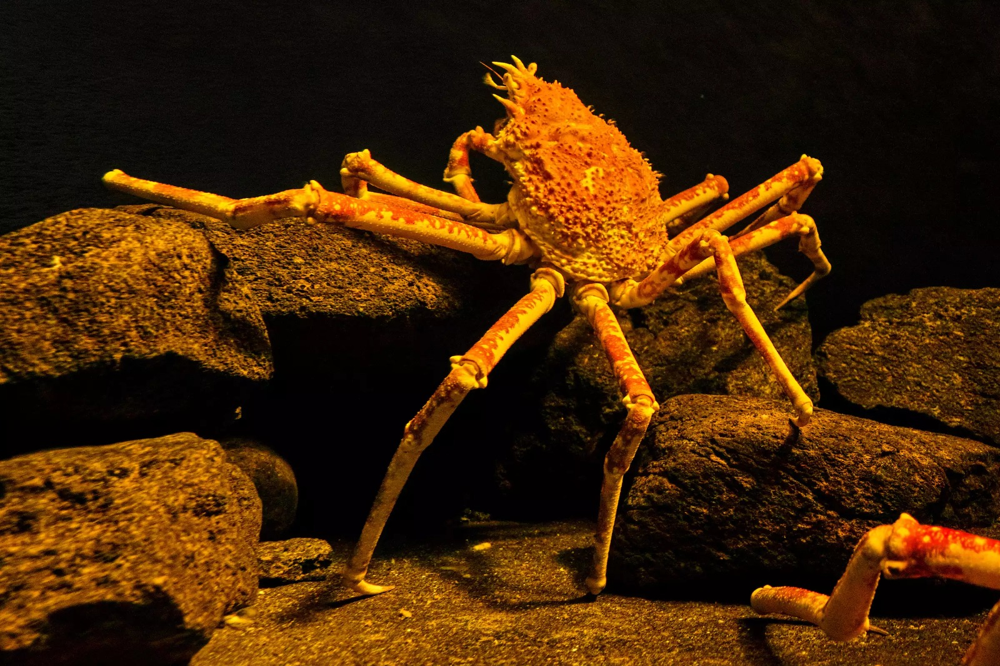
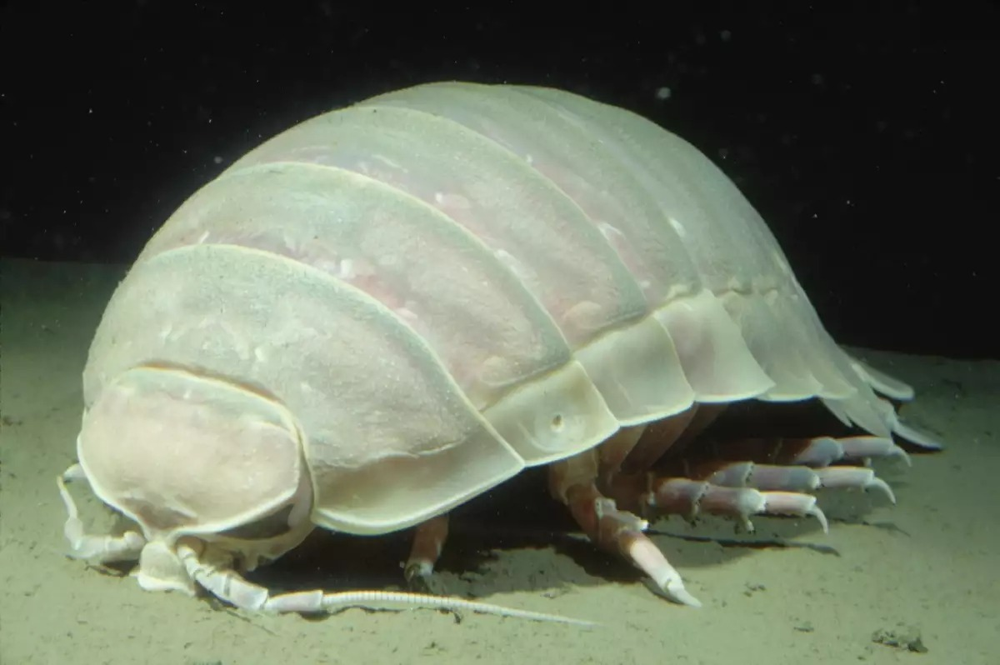

Sea Pig
The sea pig may get its name from its pink-colored body and love of the muddy seafloor, but it's actually a type of sea cucumber. The odd-looking, but surprisingly adorable, creature has tube feet on its underbelly, back, and surrounding its mouth. The sea pig spends its days snuffling through the muddy sediments on the seafloor, eating bits of dead algae and animals that have fallen from the surface. When something big, like a whale fall, sinks to the seafloor, huge herds of sea pigs gather nearby to feast on the rich organic sediments from the decaying carcass
More

The Japanese crab
The Japanese spider crab is one gangly deep-sea creature. Known for having the largest leg span of any crustacean — up to 12 feet from claw to claw — this crab looks like an oversized spider. Despite its large size, the Japanese spider crab is not a ferocious predator. Instead, it uses its long, spindly limbs to slowly stroll across the seafloor as it scavenges for dead and decaying matter. Another fun fact — young Japanese spider crabs sometimes adorn themselves with sponges or kelp, possibly to camouflage themselves from predators.
More

Giant isopod
Giant isopod. These roly poly deep-sea creatures resemble their distant relatives, the tiny pill bugs found in many gardens. One difference between the giant isopod and your garden variety pill bug is its size — giant isopods can grow up to 16 inches in size! This colossal crustacean slowly roams the seafloor, feeding on dead animals. It is found in deep cold waters and can withstand depths of over 7,000 feet!
More